按游戏内的动画树划分。所有 GIF 都还原了真实的帧时长——攻击帧由判定进度驱动， 不是匀速播放，命中帧停留最久；刀光按实际位置合成到命中窗口。
待机升级为 8 帧呼吸循环（原 4 帧）。呼吸感来自多维度同步变化：
身体起伏 body_dy、膝盖微屈 crouch、剑随呼吸轻摆。
实测身高变化 49 → 52 → 49 px，先升后降才是呼吸曲线。
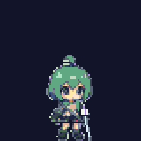
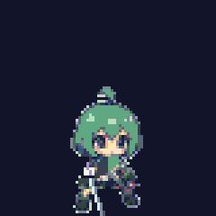
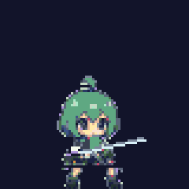
落地从 2 帧扩到 6 帧，这是"重量感"的关键瞬间。四层设计：
第 1 帧就压到最深（crouch=0.85）→ 双脚外张吸收冲击 →
回弹过冲（弹到比站立更高）→ 剑手滞后一帧。
实测身高 43 → 50 px，变化 7px。
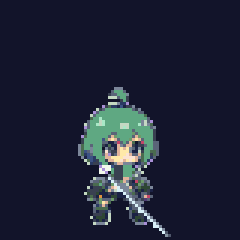
每段 6 帧，但帧时长不均匀——由判定进度驱动：命中帧
（progress 0.42~0.72）占时长 30%，起手只占 12%。
四段动作完全不同：上挑 / 横斩 / 突刺 / 跳劈。
段内 55% 后可取消接下一段，段后 0.55s 内可衔接。
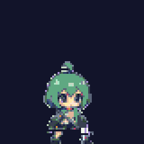
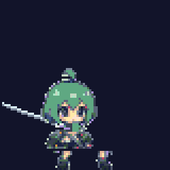
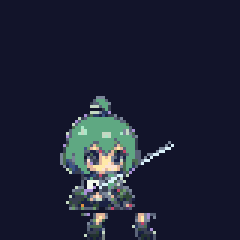
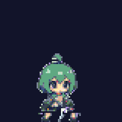
不是轻攻击的数值放大，是另一套战斗节奏：每段 8 帧但时长 0.55~0.85s （轻攻击 0.22~0.36s），有明显蓄力前摇。刀光换成暖橙金、更粗更大， 并叠了一层"残影"做出双层结构。第 3 段打完不循环，需重新起手。
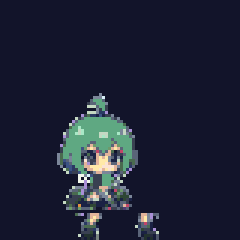
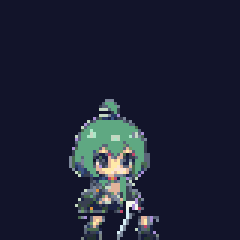
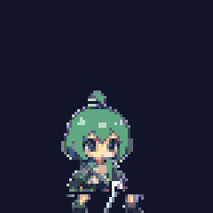
两套连段的定位差异，体现在时长、伤害、取消规则和反馈强度上。
| 维度 | 轻攻击 | 重攻击 |
|---|---|---|
| 段数 | 4 连 | 3 连 |
| 单段时长 | 0.22 – 0.36s | 0.55 – 0.85s |
| 总伤害 | 7 | 24 |
| 判定框 | 22×18 – 30×30 | 34×30 – 40×36 |
| 收招 | 循环回第 1 段 | 打完收手，需重新起手 |
| 取消窗口 | 55% | 92%（几乎不能取消） |
| 顿帧 | 0.04s | 0.08 – 0.14s |
| 刀光 | 冷蓝细弧 | 橙金粗弧 + 双层残影 |